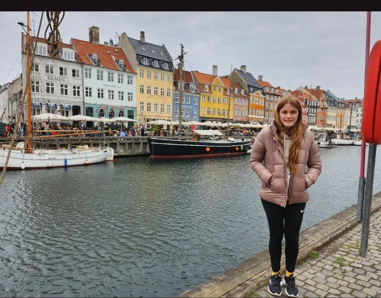

Copenhagen is a beautiful city in Denmark known for its colorful buildings, canals, and historic architecture.

I chose Copenhagen because my family lives there, which makes the city very special to me. I also enjoy its beautiful scenery, colorful buildings, and interesting history.
Some popular places to see include Nyhavn, Tivoli Gardens, and the colorful waterfront.